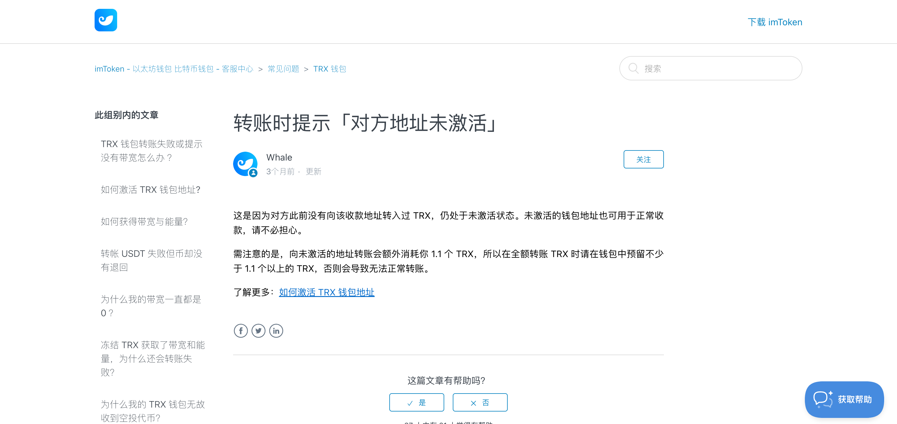

为什么转 TRC20 USDT 要准备 TRX
这是新手最常问的问题之一：我钱包里明明有 USDT，为什么还要准备 TRX 才能转出去？
因为 TRC20 USDT 不是 TRON 原生币，它是跑在 TRON 上的一个智能合约（合约地址
TR7NHqj…jLj6t）。每次转账都在调用这个合约，合约执行要烧 能量；能量不够时，TRON 自动按 100 sun/能量烧 TRX 补上。所以「只有 USDT 不够，还得有 TRX」这件事，不是钱包 bug，是链的设计。
一笔标准 TRC20 USDT 转账到底在烧什么
一笔 TRC20 USDT 转账消耗两种 TRON 资源：合约调用产生的"能量"和基础流量消耗的"带宽"。其中能量占绝对大头（每笔约 65,000—130,000），是你必须主动准备的成本；带宽几乎总是免费。
- 能量：约 65,000（老地址）或 130,000（新地址）。
- 带宽：约 345 字节。每个 TRON 账户每天免费 600 字节，所以带宽基本不用管。
为什么具体要 TRX，不是 USDT
为什么必须是 TRX 不是 USDT：TRON 的手续费机制在协议层面只认原生币 TRX——链账户里的 USDT 只是一个合约资产，合约本身不能用自己支付自己的执行费用。类比：你把一瓶水装进快递箱寄出去，水不能当运费，要另付邮费。TRX 就是这个邮费。
地址激活：新地址的隐藏成本
地址激活指的是：TRON 上一个从未收过任何转账的全新地址，必须先收到一笔 TRX / USDT 才会被写入区块链账本。激活这个动作会从发送方多扣约 1.1 TRX 的带宽 + 能量，是新手第一次给全新地址转账时最常见的"为什么扣得比预期多"的原因。
imToken 帮助中心给出了权威数字（见下方截图）：向未激活地址转账会额外消耗 1.1 TRX，所以全额转 TRX 时钱包里要至少预留 1.1 TRX 以上。

所以第一次给全新 TRON 地址转 USDT 时，你实际要准备的资源 = 合约调用能量（约 130,000，新地址翻倍）+ 激活费 1.1 TRX + 带宽。这个数字和钱包 UI 上看到的「为什么扣得比预期多」完全对得上。
要准备多少 TRX
要准备多少 TRX取决于你发送的频率和对方是新地址还是老地址。偶尔转一次预留 15 TRX（约 $4.80）；给新地址转账预留 30 TRX（约 $9.60）；每周多次建议改用能量租赁服务而不是直接烧 TRX。
| 场景 | 建议准备 | 2026-04 估算 |
|---|---|---|
| 偶尔转一次老地址 | 15 TRX | 约 $4.80 |
| 偶尔转一次新地址 | 30 TRX | 约 $9.60 |
| 一周转几次 | 改用租能量平台，TRX 留少量当缓冲 | 单笔 $1.20–$2.40 |
| 每天转多次 | 质押 ~2,500 TRX（$800）换永久每日能量 | 前 1 笔免费，超出再租或烧 |
怎么判断自己能量够不够
查能量最快的方法：去 tronscan.org 搜你的 TRON 地址，首页 Resources 区块直接显示"可用能量 / 总能量"和"可用带宽 / 总带宽"；主流钱包（TronLink / imToken / OKX Wallet）的资源菜单也是同样的数字。
在 tronscan.org 搜你的地址，页面会直接显示「可用能量 / 总能量」和「可用带宽 / 总带宽」。主流钱包的「资源」或「Resources」菜单也会显示同样信息。
如果我什么都没准备，会发生什么
- 完全没 TRX： 交易直接无法广播，钱包会拦下来告诉你「余额不足 / 资源不足」。
- 有少量 TRX 但不够： 交易上链但执行失败（
OUT OF ENERGY），TRX 照样被扣一部分，USDT 没动。在 tronscan 上这类记录会显示红色 FAILED。 - TRX 够： 交易成功，TRX 按实际消耗扣除。
常见误区
- 以为从交易所提 USDT 到 TRON 钱包会顺手给一点 TRX —— 不会。交易所只发你提的资产。
- 以为「转一点点」就不用 TRX —— 一笔 0.01 USDT 的转账吃的能量和 10,000 USDT 一样多。
- 以为 TRX 不够时可以用 USDT 自动补 —— 不能。链本身无法拿 USDT 当 gas。
第一次用 TRC20，钱包里至少留 20 TRX（imToken 官方甚至建议 50 TRX 以上，尤其是收款方可能是新地址时）。这是最便宜的保险。别等真正要转 10,000 USDT 时才发现自己少那 20 TRX。
参考资料
下面是我觉得值得直接去看的官方文档，比任何中文二手解读都更准确：
- imToken：转账时提示「对方地址未激活」 — 官方对这个最高频错误的完整解释。
- imToken：如何获得带宽与能量 — 免费额度、一键租能量、质押三种路径的官方说明。
- TRON Developer Docs: Resource Model — 协议层解释为什么合约调用会消耗能量，以及资源不足时如何燃烧 TRX。
- TronScan — 任何一笔 TRON 转账最终都会落到这里，资源扣费也能在链上看到。